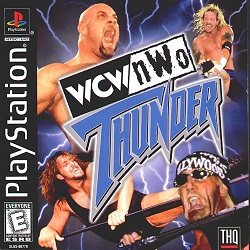
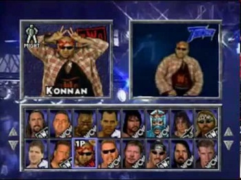

Força, golpes rápidos e muita malandragem. Tudo isso faz parte da luta livre, que produtora THQ quis trazer para o PlaySyation, com bastante realismo na época. O WCW/NWO Thumder foi peoduzido em conjunto com a loga americana de luta livre, e graças à contribuição de lutadores profissionais foi possivel produzir um jogo com graficos de arrasar.
Thuder era bem diferente de outros jogos de luta livre qundo foi lançado. Não se lutava com alienígenas e ursos, pois os produtores fizeram questão de fazer algo bem próximo do real. Você podia escolher entre 32 jogadores mo início, e conforme for vencendo poderá chegar a ter 64 lutadores disponível. Com modo de luta chamado Battle Royale, que corresponde ao campeonato de luta livre mundial, que foi reproduzido em videogame pela primeira vez. A THQ produziu videos e sons especiais para cada lutador. para completar, eles ainda colocaram os nomes dos lutadores reais que participavam do campeonato americano. Entre montanha de músculos estavam os nomes de: Goldberg, Hollywood Hogan, Sting, Giant, entre outros.
Os ringues de luta também tiveram um tratamento todo especial. Uma equipe de produtores percorreu diversos locais de luta no Estados Unidos, para depois construir cenários realistas e com mais detalhes. E, realmente, o ponto mais forte do jogo são as imagens gráficas. Mesmo com texturas detalhadas nos lutadores e no cenário, o jogo não perdeu em velocidade e nem jogabilidade. Mesmo quando a quatro lutadores no ringue, o jogo não perdia qualidade.
|  | |
.png) |